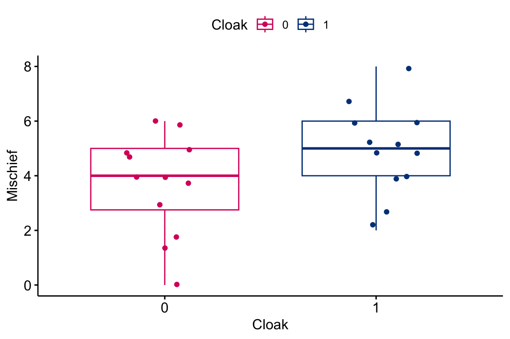
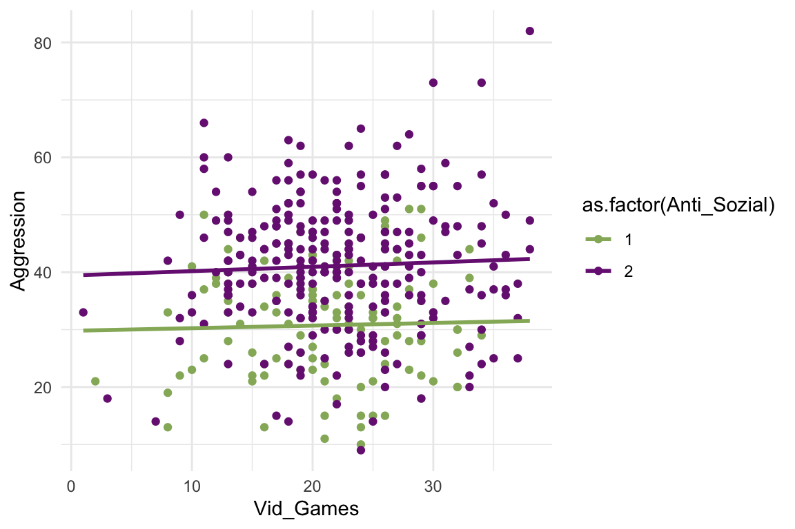
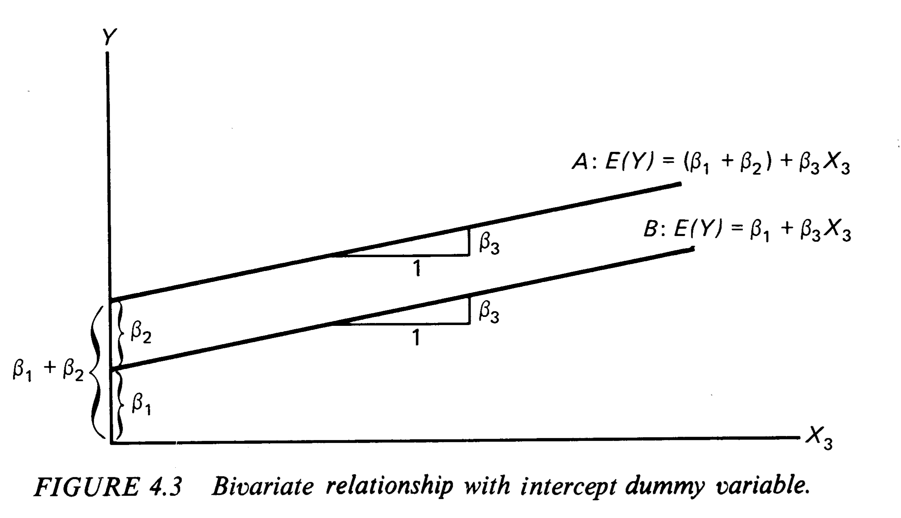
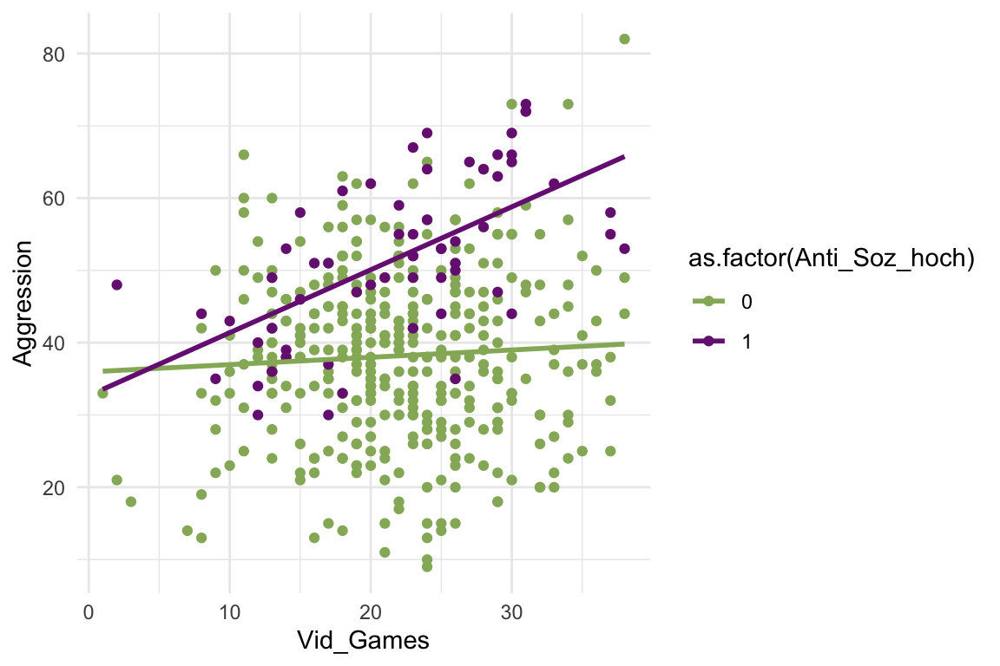
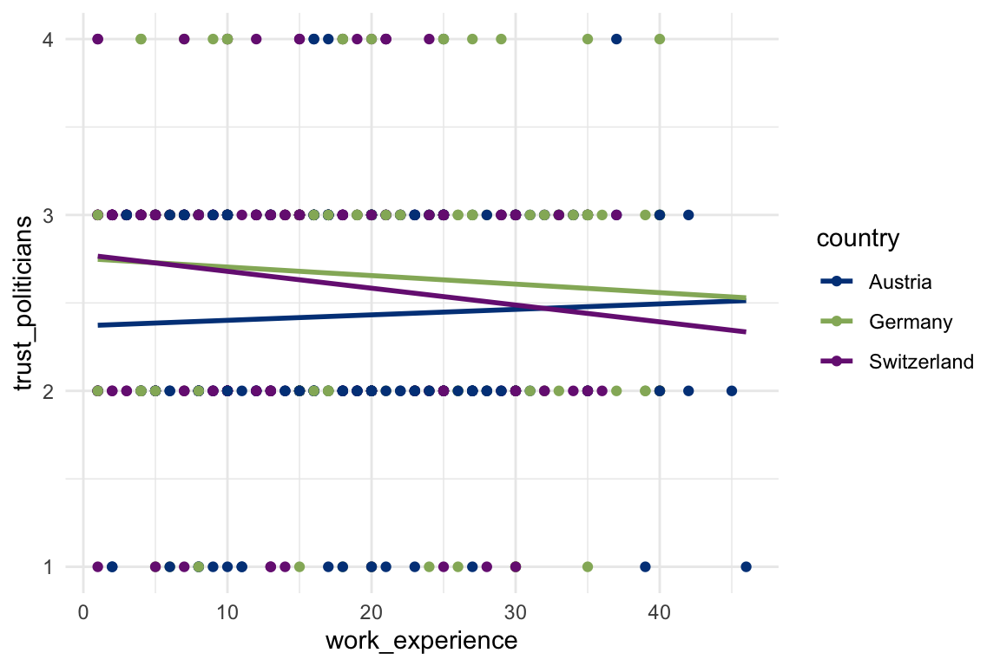

4 Gruppenvergleiche (ANCOVA)
Nominale UVs sind dichotome Variablen (zwei Ausprägungen) oder kategoriale (mehr als zwei Ausprägungen). Wenn wir mit solchen nominalen Variablen Unterschiede erklären wollen (die auf Zusammenhänge bzw. Kausalität zurückgehen), bilden wir mit diesen Variablen Gruppen der Fälle, die wir dann vergleichen. Der Vergleich besteht in der Regel in der Prüfung der Signifikanz von Unterschieden. Das können t-Tests für Mittelwertunterschiede sein. Varianzanalysen für zwei oder mehr Gruppen. Oder auch Regressionen, wo die nominalen Variablen als UV bzw. UVs eingehen.
Der Datensatz, der für dieses Beispiel herangezogen wird, ist von Andy Field. Er hatte einen Artikel darüber gelesen, dass Ingineure einen Stoff entwickeln, der wie unsichtbar macht, indem irgendwie der Hintergrund auf den Umhang projeziert wird oder so. Jedenfalls hat sich Andy Field dann überlegt, was die Leute mit so einem Unsichtbarkeitsumhang (Cloak) wohl für Schabernack (Mischief) anstellen würden, wenn sie von ihrer Umgegung nicht mehr beobachtet werden. Dafür hat Andy Field ein Experiment in der Zukunft imaginiert, bei dem 12 Personen kein Umhang gegeben wird und 12 ein Tarnmantel, der unsichtbar macht. Dann wird gemessen, wie viel Unsinn die Leute jeweils anstellen. Die durchschnittliche Anzahl von Schabernackstaten (Mischief) wird dafür zwischen der Experimental- (hat einen Cloak an) und der Kontrollgruppe (kein Cloak) verglichen.
4.1 Visualisierung und Deskriptives
Gruppenvergleiche können schon gut mit Boxplots gemacht werden. Dabei wird der Mittelwert in einer Box als Linie dargestellt und die das untere sowie das obere Quartil (25% bzw. 95% der Verteilung) als Ränder der Box.
Es können aber auch Histogramme erstellt werden, mit Mittelwerten für zwei Gruppen, wobei die Balken für die einzelnen Werte bzw. Wertegruppen überlagert sind.

Spätestens an dieser Stelle sollte man sich die Ausgangsvariablen mal angucken, um zu sehen, wie die verteilt ist und wo ihr Mittelwert liegt und wie sie um ihren Mittelwert streut und all das. Dafür ist es immer sinnvoll sich die Variablen als Häufigkeitsauszählung anzusehen.
## Cloak of invisibility (Cloak) <numeric>
## # total N=24 valid N=24 mean=0.50 sd=0.51
##
## Value | Label | N | Raw % | Valid % | Cum. %
## ------------------------------------------------
## 0 | No Cloak | 12 | 50 | 50 | 50
## 1 | Cloak | 12 | 50 | 50 | 100
## <NA> | <NA> | 0 | 0 | <NA> | <NA>
##
## Mischievous Acts (Mischief) <numeric>
## # total N=24 valid N=24 mean=4.38 sd=1.86
##
## Value | N | Raw % | Valid % | Cum. %
## ------------------------------------
## 0 | 1 | 4.17 | 4.17 | 4.17
## 1 | 1 | 4.17 | 4.17 | 8.33
## 2 | 2 | 8.33 | 8.33 | 16.67
## 3 | 2 | 8.33 | 8.33 | 25.00
## 4 | 5 | 20.83 | 20.83 | 45.83
## 5 | 7 | 29.17 | 29.17 | 75.00
## 6 | 4 | 16.67 | 16.67 | 91.67
## 7 | 1 | 4.17 | 4.17 | 95.83
## 8 | 1 | 4.17 | 4.17 | 100.00
## <NA> | 0 | 0.00 | <NA> | <NA>Und man sollte sich die Mittelwerte der AV (hier Mischief) und die Gruppierungsvariable (auch UV und hier Cloak) ausgeben lassen.
## # A tibble: 2 × 2
## Cloak Mittelwerte
## <dbl+lbl> <dbl>
## 1 0 [No Cloak] 3.75
## 2 1 [Cloak] 54.2 Mittelwertvergleich für zwei Gruppen
4.2.1 mit dem t-Test
Mit dem t-Test kann geprüft werden, ob sich die Mittelwerte der beiden Gruppen unterscheiden. Es wird ein t-Test für unabhängige Stichproben gemacht. Dabei wird die Differenz der beiden Mittelwerte berechnet und gegen die H0 getestet, dass sie 0 sein könnte, also in der GG kein Unterschied zwischen der Gruppe Cloak = 1 und der Gruppe Cloak = 0.
##
## Welch Two Sample t-test
##
## data: Mischief by Cloak
## t = -1.7135, df = 21.541, p-value = 0.101
## alternative hypothesis: true difference in means between group 0 and group 1 is not equal to 0
## 95 percent confidence interval:
## -2.764798 0.264798
## sample estimates:
## mean in group 0 mean in group 1
## 3.75 5.00Der Output sagt uns, dass die Mittelwerte von Mischief aufgeteilt nach Cloak angeschaut werden. Der t-Wert unter Annahme der Nullhypothese H0 ist -1.7135 und der zugehörige p-Wert ist 0.101. Im Text steht noch, dass die Alternativhypothese lautet: Der wahre Mittelwertunterschied zwischen der 0-Gruppe und der 1-Gruppe ist nicht gleich 0. Darunter steht das 95-prozentige Konfidenzintervall der Mittelwertdifferenz. In der untersten Zeile werden die beiden Mittelwerte der beiden Gruppen nochmals ausgegeben.
4.2.2 Mit Korrelation
Wenn die Gruppenvariable eine Dummyvariable ist (also dichotom und nur aus 0 und 1 bestehend), dann kann auch eine Korrelation gerechnet werden, wobei der t-Wert dann derselbe ist, wie beim t-Test von Mittelwertvergleichen für unabhängige Stichproben.
##
## Pearson's product-moment correlation
##
## data: Invisibility$Mischief and Invisibility$Cloak
## t = 1.7135, df = 22, p-value = 0.1007
## alternative hypothesis: true correlation is not equal to 0
## 95 percent confidence interval:
## -0.06994687 0.65575942
## sample estimates:
## cor
## 0.3431318Vergleichen Sie mal den t-Wert und den p-Wert der Korrelation mit dem des t-Test für Mittelwertunterschiede. Die sind (bis auf Rundungsunterschiede) identisch.
Es gibt die einfache Varianzanalyse. Dabei wird geprüft, ob die Gruppierungsvariable signifikant Varianz der AV aufklärt. Der p-Wert ist derselbe, wie oben beim t-Test und der Korrelation, weil es dieselben Daten und Variablen sind.
4.2.3 Gruppenvergleich mit Varianzanalyse
# Mache eine Varianzanalyse (Analysis of Varian (aov bzw. ANOVA)) mit einer UV (one.way)
one.way <- aov(Mischief ~ Cloak, data = Invisibility)
# Gib die Zusammenfassung der aov raus
summary(one.way)
## Df Sum Sq Mean Sq F value Pr(>F)
## Cloak 1 9.38 9.375 2.936 0.101
## Residuals 22 70.25 3.193
# Berechne mal das R^2 durch die Quadratsumme (Sum Sq), die die Gruppierung (hier nach Cloak) aufklärt, durch die Gesamtquadratsumme (Sum Sq der Cloak + der der Residuals). Dann runde auf 4 Nachkommastellen.
R2 <- round(9.38/(9.38 + 70.25),4)
# Binde das R^2 in die Ausgabe ein, einfach für später
paste0("R2 = Sum_Sq_Cloak / (Sum_Sq_Cloak + Risiduals_SumSq): ", R2," (12%)")
## [1] "R2 = Sum_Sq_Cloak / (Sum_Sq_Cloak + Risiduals_SumSq): 0.1178 (12%)"Die Varainzanalyse prüft, ob die Mittelwerte in einer AV für jede der UV-Gruppen identisch ist. Was in der Tabelle steht, sind lauter Hilfswerte für den einen relevantenn Wert: dem p-Wert (hier “Pr(>F)). Der p-Wert ist wieder derselbe wie oben bei der Korrelation und dem Mittelwertvergleich.
4.3 Mittelwertvergleich mit Regression
Am besten kann mit einer Regression ein Mittelwertvergleich durchgeführt werden. Das \(R^2\) entspricht dem Quadrat der Korrelation. Der F-Wert zum \(R^2\) ist gleich dem F-Wert aus der Varianzanalyse. Der b-Wert (hier von «Cloak of invisibility») in der Regression entspricht dem Mittelwertunterschied zwischen den beiden Gruppen. Der «Intercept» entspricht dem Mittelwert der 0-Gruppe (keine Cloak). Mit der Regression kann also alles abgedeckt werden, was mit den anderen Auwertungsmethoden auch erledigt wird. Die Regression kann aber mehr!
| Mischievous Acts | |||||
|---|---|---|---|---|---|
| Predictors | Estimates | std. Beta | CI | standardized CI | p |
| (Intercept) | 3.75 | -0.00 | 2.68 – 4.82 | -0.41 – 0.41 | <0.001 |
| Cloak of invisibility | 1.25 | 0.34 | -0.26 – 2.76 | -0.07 – 0.76 | 0.101 |
| Observations | 24 | ||||
| R2 / R2 adjusted | 0.118 / 0.078 | ||||
Regression mit einer Dummmy als UV
4.4 Interaktionseffekte
Werden wir mal erwachsen und schauen uns ein anderes Beispiel an, das auf eine Medienwirkgungsfrage zurück geht. Gehen wir also jetzt der Frage nach, ob gewalthaltige Videospiele antisozial machen. Dazu hat das britische Ofcom (Office of Communication) 2008 eine Studie herausgegeben [@Ofcom2008]. Für die Studie wurden 442 Jugendliche befragt. Im folgenden Chunkg wird der dazugehörige Datensatz heruntergeladen, umgewandelt und im Datenobjekt «Video_Games» gespeichert. Den analysieren wir im Folgenden. Die Variablen sind «Aggression» als Messung aggressiver Verhaltensweisen, «CaUnTs» als callous unemotional traits (affektiv-soziale defizite) und «Vid_Games» in Stunden Nutzung von Videospielen.
## # A tibble: 442 × 4
## ID Aggression Vid_Games CaUnTs
## <dbl> <dbl> <dbl> <dbl>
## 1 69 13 16 0
## 2 55 38 12 0
## 3 7 30 32 0
## 4 96 23 10 1
## 5 130 25 11 1
## 6 124 46 29 1
## # … with 436 more rowsSchauen wir uns das mal genauer an:
## Warning in FUN(X[[i]], ...): NAs durch Umwandlung erzeugt
## `geom_smooth()` using formula = 'y ~ x'
Wie man sieht gibt es die zwei Gruppen. Wenn die Tage pro Woche mit Videospielen steigt, dann steigt die Aggression kaum an. Das ist für beide Gruppen so, ber für die 2-er-Gruppe (mittleres Antisoziales Verhalten) liegen die Werte im Mittel höher. Das haben wir jetzt gesehen, aber geschätzt und getestet haben wir es noch nicht. Das geht aber gut mit der Regression.
4.5 Eine Dummy als UV
Wenn wir eine Dummyvariable als UV haben, dann haben wir es eigentlich mit einem Unterschiedstest zu tun, also einem Mittelwertvergleich. Vergleichen werden dabei die Mittelwerte der UV für zwei Gruppen. Die Gruppen wiederum werden durch in der Dummyvariable festgelegt: Die eine Gruppe (G0) hat die 0 und die andere Gruppe (G1) die 1. Es wird also die Differenz in den Y-Werten (Y_Diff) durch die Dummyvariable erklärt.
\[\begin{align} \overline{Y}_{Diff}&=\overline{Y}_{G1}-\overline{Y}_{G0}&\\ Y_i&=b_1 + b_2X_{i2}\\ Y_i&=b_1 &\text{ wenn } X_{i2}=0\\ Y_i&=b_1 + b_2 &\text{ wenn } X_{i2}=1\\ \text{Also ist:}\overline{Y}_{Diff}&=b_2\\ t&=\frac{\overline{Y}_{G1}-\overline{Y}_{G0}}{se_{\overline{Y}_{Diff}}}=\frac{b_2}{se_b} \end{align}\]
Hier ist nur «Anti_Soz_mittel» als UV im Modell.
| Agression | |||||
|---|---|---|---|---|---|
| Predictors | b | std. b | CI | standardized CI | p |
| (Intercept) | 30.76 | -0.00 | 28.71 – 32.81 | -0.09 – 0.09 | <0.001 |
|
Callous Unemotional Traits |
10.33 | 0.40 | 7.91 – 12.75 | 0.30 – 0.49 | <0.001 |
| Observations | 381 | ||||
| R2 / R2 adjusted | 0.157 / 0.155 | ||||
Regression mit einer Dummy als UV
Interpretation der Regression: Der (Intercept) hat im b eine 30.76 und zeigt daher in diesem Modell an, wie gross der Mittelwert für die Referenzgruppe ist (0 für Anti_Soz_mittel «nicht mittel»). Das b für die «Callous Unemotional Traits» liegt bei 10.33. Das bedeutet, dass der Mittelwert der Gruppe Anti_Soz_mittel = 1 um 10.33 grösser ist als der Mittelwert der 0-Gruppe, also 41.09. Dieser Unterschied entspricht einem Zusammenhang von .4 als Korrelation, was an dem standardisierten b abgelesen werden kann, weil die standardisierten Regressionskoeffizienten (oft auch als BETA bezeichnet) sehr dicht an den Korrelationskoeffizienten sind. Das Konfidenzintervall für den Mittelwertunterschied liegt zwischen 7.91 und 12.75. Da 0 nicht mit im Intervall liegt, sehen wir schon, dass der Mittelwertunterschied signifikant ist. Wir sehen aber nicht nur, dass der Mittelwertunterschied signifikant von 0 verschieden ist, sondern auch, dass er signifikant von z.B. 5 verschieden ist. Wenn jetzt zum Beispiel andere Forscherinnen das Phänomen vorher schon untersucht gehabt hätten und die Mittelwertunterschied zwischen 1.93 und 4.25 gefunden hätten, dann könnten wir mit der Analyse hier sagen, dass sich die beiden Konfidenzintervalle nicht überschneiden, also unser Ergebnis signifikant von dem der anderen Forscher ist. Das geht schon in die Richtung Metaanalyse. Wenn wir nochmal in die Tabelle schauen, dann sehen wir hinten auch, dass die p-Werte unter .05 liegen, was eine Signifikanz auf dem 95%-igem Signifikanzniveau anzeigt. Das wussten wir über die CI aber auch schon vorher und da wussten wir sogar mehr!
4.6 Dummy und Covariate
Jetzt wird das Modell um eine Covariate ergänzt. Mit olsrr::ols_vif_tol(Modell3) werden die Toleranz und der VIF berechnet.
## Variables Tolerance VIF
## 1 Vid_Games 0.9998605 1.00014
## 2 Anti_Soz_hoch 0.9998605 1.00014| Agression | |||||
|---|---|---|---|---|---|
| Predictors | b | std. b | CI | standardized CI | p |
| (Intercept) | 33.13 | -0.00 | 29.54 – 36.73 | -0.09 – 0.09 | <0.001 |
| Video Games(Hours per week) |
0.23 | 0.13 | 0.07 – 0.39 | 0.04 – 0.21 | 0.004 |
| Callous Unemotional Traits |
13.65 | 0.37 | 10.51 – 16.79 | 0.29 – 0.46 | <0.001 |
| Observations | 442 | ||||
| R2 / R2 adjusted | 0.157 / 0.153 | ||||
Die Toleranzwerte sind sehr hoch und daher völlig ok. Der Varianzinflationsfaktor ist fast genau 1. Es gibt also eigentlich keine Inflation der Fehlerstreuung der b’s (und allem was darauf aufbaut, wie die standardisierten Regressionskoeffizienten, Konfidenzintervalle, t-Wert zum t-Test und also auch die p-Werte). Also ist hier alles gut.
4.7 Dummy in Interaktion mit der Covariate
Es kann natürlich sein, dass eine Gruppe mal einen anderen Zusammenhang hat, also einen anderen Anstieg der Regressionsgeraden. Jetzt nehmen wir die Gruppe mit hohem Antisozialem Verhalten mit rein und gucken für die, ob das häufige Spielen von Videospielen einen Einfluss auf ihr aggressives Verhalten hat.
## `geom_smooth()` using formula = 'y ~ x'
In der Grafik ist gut zu erkennen, dass die Videospiele auf die Personen mit hohem antisozialen Verhalten eine deutlich stärkere Wirkung hat. Der Anstieg der Regressionsgerade ist für die Gruppe mit Anti_Soz_hoch deutlich steiler. Ihr Mittelwert liegt im Schnittpunkt der Mittelwert (in der Mitte der Wolke) auch höher als bei der Gruppe ohne hohes antisoziales Verhalten.
Das lässt sich in einer Regression bauen, indem die Dummy so wie sie ist in das Modell aufgenommen wird und dann noch als Interaktion mit der Kovariaten.
## Variables Tolerance VIF
## 1 Vid_Games 0.8318770 1.202101
## 2 Anti_Soz_hoch 0.1049793 9.525692
## 3 Vid_Games:Anti_Soz_hoch 0.1024746 9.758512| Agression | ||||||
|---|---|---|---|---|---|---|
| Predictors | b | std. b | CI | standardized CI | p | std. p |
| (Intercept) | 35.95 | -0.00 | 32.10 – 39.80 | -0.09 – 0.08 | <0.001 | 0.968 |
| Video Games(Hours per week) |
0.10 | 0.11 | -0.07 – 0.27 | 0.03 – 0.20 | 0.238 | 0.008 |
| Callous Unemotional Traits |
-3.28 | 0.37 | -12.84 – 6.29 | 0.29 – 0.46 | 0.501 | <0.001 |
| Vid_Games:Anti_Soz_hoch | 0.77 | 0.15 | 0.36 – 1.18 | 0.07 – 0.23 | <0.001 | <0.001 |
| Observations | 442 | |||||
| R2 / R2 adjusted | 0.183 / 0.177 | |||||
Dabei bauen wir im Grunde die Variablen doppelt in das Modell ein. Das hat zur Folge, dass vor allem die Dummys mit dem Interaktionsterm sehr hoch Multikollinear sind. Da hilft es, wenn man alle Variablen im Modell mit scale()z-transformiert, also zentriert und so skaliert, dass die Standardabweichungen bei allen Variablen 1 sind.
## Variables Tolerance VIF
## 1 Vid_Games 0.8318770 1.202101
## 2 Anti_Soz_hoch 0.9993801 1.000620
## 3 Vid_Games:Anti_Soz_hoch 0.8314800 1.202675| Aggression | ||||||
|---|---|---|---|---|---|---|
| Predictors | b | std. b | CI | standardized CI | p | std. p |
| (Intercept) | -0.15 | -0.00 | -0.24 – -0.06 | -0.09 – 0.08 | 0.001 | 0.968 |
| Vid Games | 0.06 | 0.11 | -0.04 – 0.15 | 0.03 – 0.20 | 0.238 | 0.008 |
| Callous Unemotional Traits |
1.07 | 0.37 | 0.83 – 1.32 | 0.29 – 0.46 | <0.001 | <0.001 |
| Vid_Games:Anti_Soz_hoch | 0.42 | 0.15 | 0.20 – 0.65 | 0.07 – 0.23 | <0.001 | <0.001 |
| Observations | 442 | |||||
| R2 / R2 adjusted | 0.183 / 0.177 | |||||
4.8 Eine Kategoriale als UV
Es kann natürlich auch sein, dass man eine Variable hat, die kategorial ist, also mehr als zwei Ausprägungen hat. Dann erstellt man zu jeder Ausprägung eine Dummyvariable und baut zwei davon in das Modell ein. Dann ist die Ausprägung der übrigen Variable die Referenzkategorie. Den Schnittpunkt mit den Mittelwerten der übrigen Kovariaten liegt für die Referenzkategorie beim \(b_1\). Der Anstieg der Referenzkategorie ist der des b’s für die Kovariate alleine.
## Variables Tolerance VIF
## 1 Vid_Games 0.9907942 1.009291
## 2 Anti_Soz_hoch 0.7390622 1.353066
## 3 Anti_Soz_mittel 0.7373241 1.356256
## 4 Vid_Games:Anti_Soz_hoch 0.6855523 1.458678
## 5 Vid_Games:Anti_Soz_mittel 0.6887144 1.451981| Aggression | |||||
|---|---|---|---|---|---|
| Predictors | b | std. b | CI | standardized CI | p |
| (Intercept) | -0.00 | -0.00 | -0.08 – 0.08 | -0.08 – 0.08 | 0.958 |
| Vid Games | 0.10 | 0.10 | 0.02 – 0.18 | 0.02 – 0.18 | 0.015 |
| Anti Soz hoch | 0.57 | 0.57 | 0.48 – 0.66 | 0.48 – 0.66 | <0.001 |
| Anti Soz mittel | 0.40 | 0.40 | 0.31 – 0.49 | 0.31 – 0.49 | <0.001 |
| Vid Games × Anti Soz hoch | 0.16 | 0.16 | 0.07 – 0.25 | 0.07 – 0.25 | <0.001 |
| Vid Games × Anti Soz mittel |
0.01 | 0.01 | -0.09 – 0.10 | -0.09 – 0.10 | 0.865 |
| Observations | 442 | ||||
| R2 / R2 adjusted | 0.299 / 0.291 | ||||
4.9 Beispiel Vertrauen in Politiker nach journalistischen Arbeitsjahren
In diesem Beispiel wird untersucht, wie sich die Dauer der Arbeitsjahre von Journalisten auf ihr Vertrauen in Politiker auswirkt. Den Datensatz holen wir aus tidycomm::WoJ.
In dem Scatterplot sieht man gut, dass das Vertrauen in Deutschland und der Schweiz sinkt, wobei es in der Schweiz auf demselben Niveau beginnt, dann aber schneller abnimmt mit den Jahren an Erfahrungen. In Österreich ist das Vertrauen am Anfang schlechter und steigt dann mit der Zeit.
## `geom_smooth()` using formula = 'y ~ x'
## Warning: Removed 3 rows containing non-finite values (`stat_smooth()`).
## Warning: Removed 3 rows containing missing values (`geom_point()`).
Hier das Ganze als Regressionsrechnung. Deutschland ist die Referenzkategorie und dann wird geschaut, wie die Schweiz und Österreich davon abweichen.
## Variables Tolerance VIF
## 1 work_experience 0.9258454 1.080094
## 2 CH 0.6292380 1.589224
## 3 AT 0.6558027 1.524849
## 4 work_experience:CH 0.7298261 1.370189
## 5 work_experience:AT 0.7190955 1.390636| trust politicians | ||||||
|---|---|---|---|---|---|---|
| Predictors | b | std. b | CI | standardized CI | p | std. p |
| (Intercept) | -0.01 | -0.01 | -0.09 – 0.07 | -0.09 – 0.07 | 0.799 | 0.786 |
| work experience | -0.06 | -0.06 | -0.14 – 0.02 | -0.14 – 0.02 | 0.165 | 0.161 |
| CH | -0.04 | -0.04 | -0.14 – 0.06 | -0.14 – 0.06 | 0.420 | 0.420 |
| AT | -0.16 | -0.16 | -0.26 – -0.07 | -0.26 – -0.07 | 0.001 | 0.001 |
| work experience × CH | -0.03 | -0.03 | -0.13 – 0.06 | -0.13 – 0.06 | 0.492 | 0.492 |
| work experience × AT | 0.06 | 0.05 | -0.04 – 0.15 | -0.04 – 0.15 | 0.259 | 0.259 |
| Observations | 610 | |||||
| R2 / R2 adjusted | 0.030 / 0.022 | |||||